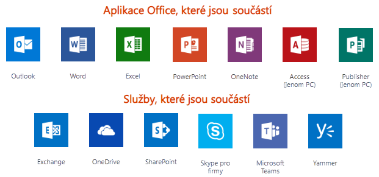

Symbolický "balík" programů obvykle tvoří textový procesor, tabulkový procesor, nástroj na tvorbu prezentací, databázový systém, někdy i groupwarové nástroje (systémy organizování času, zajišťování schůzek), grafické editory apod. Vedle komerčních Microsoft Office či Apple iWork existují také balíky OpenOffice nebo WPS Office, dostupné zdarma a pro řadu platforem.
